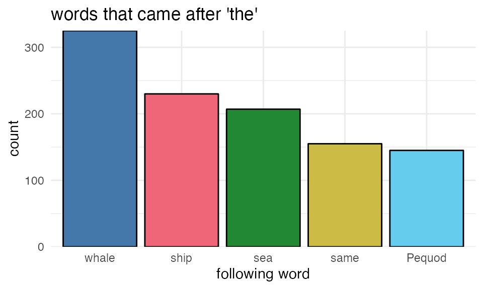
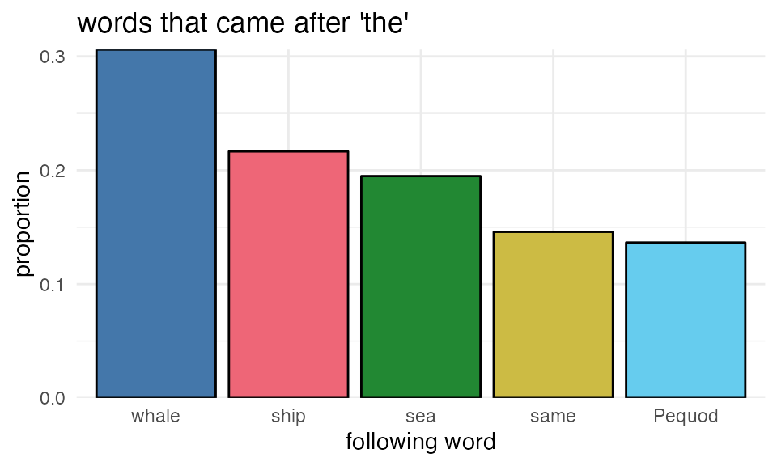
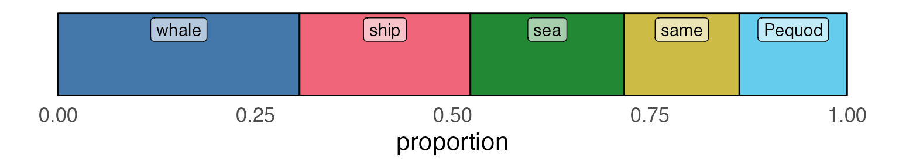
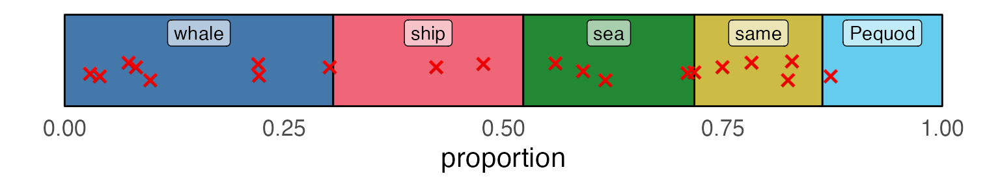
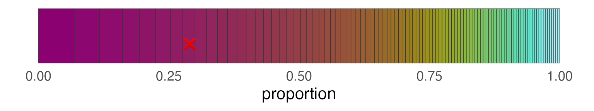
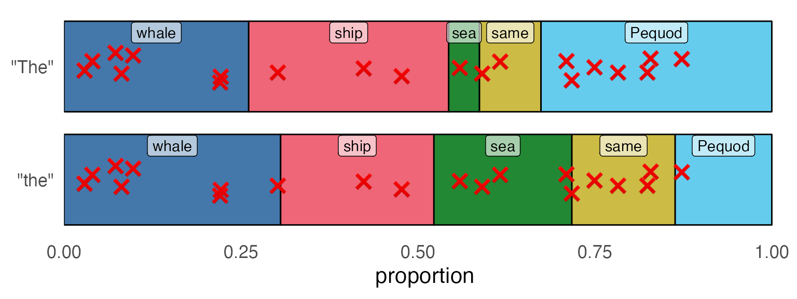

Sampling from a probability distribution
From an n-gram model, we can generate new sequences by sampling from the probability distribution over tokens.
From counts to proportions
Let’s start by saying we’re working with a bigram model (counts of 2 token sequences). If we start with an input token “the”, how do we randomly generate the next token?
Let’s restrict our view to just the top 5 words that followed “the” in Moby Dick:

We can re-express these frequencies as proportions by dividing each frequency by the sum of all frequencies.
\[ P(w_i|w_{i-1}) = \frac{C(w_{i-1}w_i)}{\sum(w_{i-1}w)} \]

These two plots should look the same, just with different labels on the y-axis.
From proportions to a “probability distribution”
Now, if we stack each bar on top of each other and lie it flat, we get the “probability distribution” over tokens. The rectangle for each word represents how much probability it “takes up”.

Sampling from the probability distribution
To sample from this probability distribution, we can randomly throw darts at the figure above. Whichever rectangle the dart lands inside, we’ll say is the word we “sampled”.
Just be super clear that the 20 ❌es in the next plot are totally at random, I’ll include the code that I used to generate them.
r
tibble(
samp = runif(20, min = 0, max = 1)
) ->
rand_samples
If we count up the total number of ❌es in each square above, the order of highest to lowest frequency samples probably won’t perfectly line up with the tokens that had the highest to lowest probabilities.
| fol | n |
|---|---|
| whale | 8 |
| sea | 5 |
| same | 4 |
| ship | 2 |
| Pequod | 1 |
A little more realistic
If we try to get just a little bit more realistic, and look at the top 100 tokens that follow “the”, we’ll see that a single randomly sampled token is very often not going to be the highest probability token.

| fol | n | prop |
|---|---|---|
| most | 110 | 0.02 |
Different Probability distributions
Words occur at different frequencies in different contexts, so they’ll have different probability distributions in each context. Even the same “dart throws will return different sampled words if the probability distributions are different.
| "The _" | "the _" | |||
|---|---|---|---|---|
| n | proportion | n | proportion | |
| whale | 12 | 0.26 | 325 | 0.31 |
| ship | 13 | 0.28 | 230 | 0.22 |
| sea | 2 | 0.04 | 207 | 0.19 |
| same | 4 | 0.09 | 155 | 0.15 |
| Pequod | 15 | 0.33 | 145 | 0.14 |

| "The _" | "the _" | |
|---|---|---|
| whale | 7 | 8 |
| ship | 3 | 2 |
| sea | 1 | 5 |
| same | 2 | 4 |
| Pequod | 7 | 1 |
Reuse
Citation
@online{fruehwald2024,
author = {Fruehwald, Josef},
title = {Sampling from a Probability Distribution},
date = {2024-02-15},
url = {https://lin511-2024.github.io/notes/meetings/05_ngrams2.html},
langid = {en}
}